Julia
This section provides instructions on installing the software needed for this course. We show most of the instructions for only Windows 10.
The first step is to download the proper installation file from the official download page. The appropriate version is the 64-bits version for the Windows operating system in most cases.
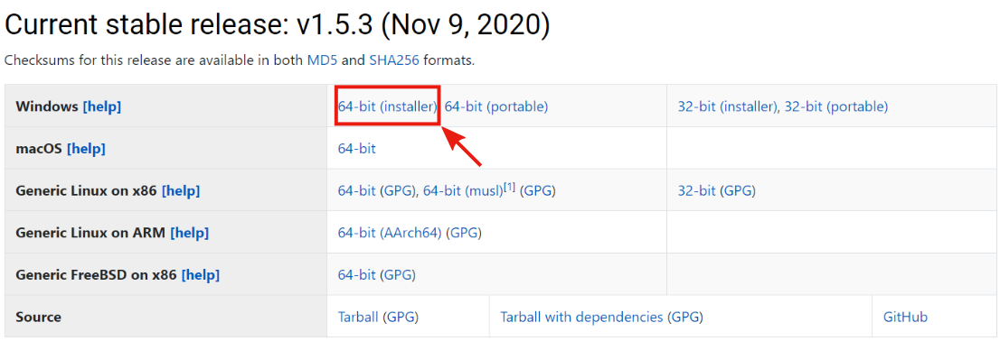
If you use an operating system other than Windows 10, follow the platform-specific instructions. Otherwise, you can follow the instructions below. Run the downloaded Julia installer and follow the given instruction.
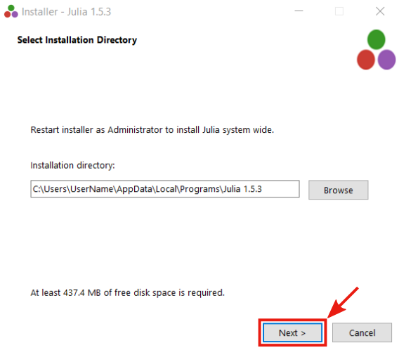
There is no need to change the default settings. However, in the installer's last window, make sure that the Open Julia directory option is selected.
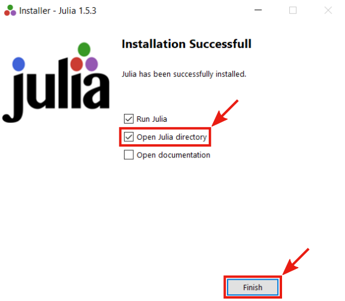
After finishing the installation, the Julia terminal and the Julia directory in the file explorer should open. Do not close the Julia directory, since we will need it later!!!
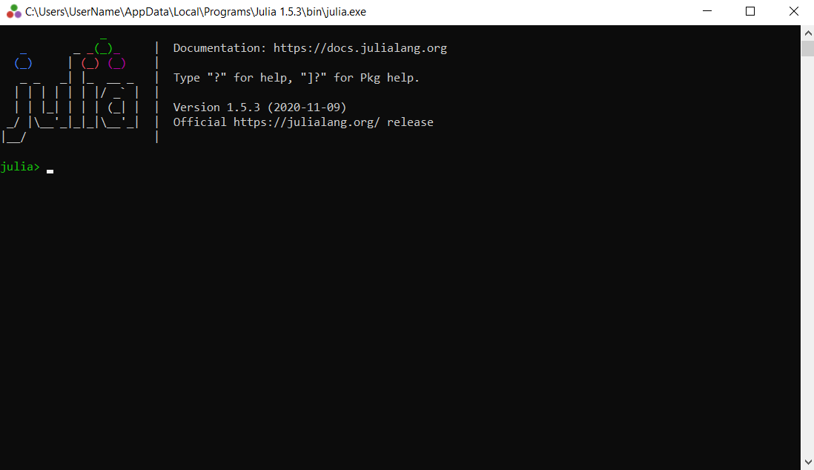
Adding Julia to PATH
To automatically run by julia, we need to add Julia bin directory to PATH. Open the Run app using the shortcut Windows key + R or by typing Run in the search bar.
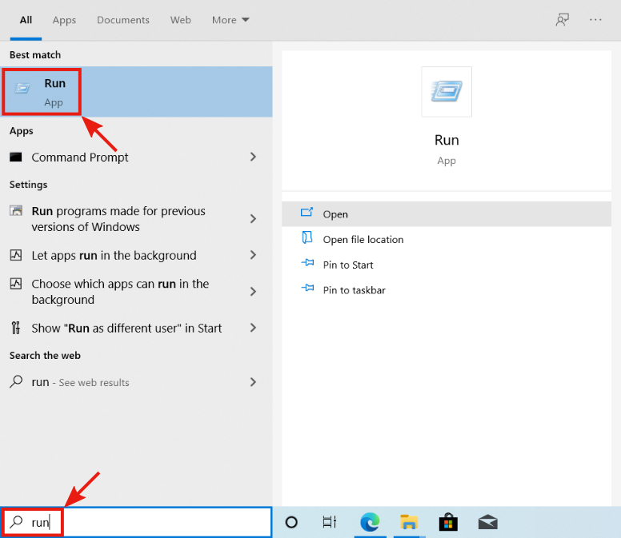
Then type rundll32 sysdm.cpl,EditEnvironmentVariables into the Run app and press OK
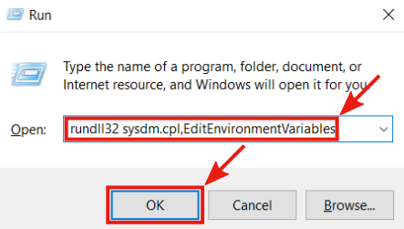
After the previous step, the Environment Variables window should appear. Under the User Variables section, select the row with the variable Path and click the Edit button.
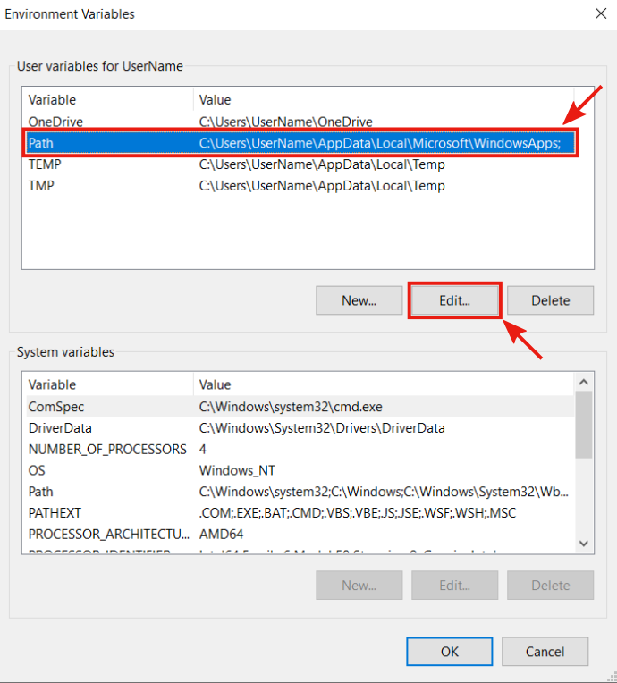
The Edit environment variable window will appear. Now we need to get the path to Julia bin folder. It can be done easily from the Julia directory opened by the Julia installer. In Julia directory, navigate to the bin folder. 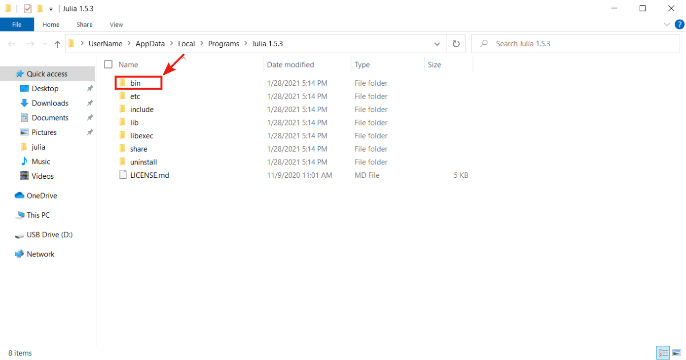
In the Julia bin folder, select and copy the path from the system file explorer's path bar.
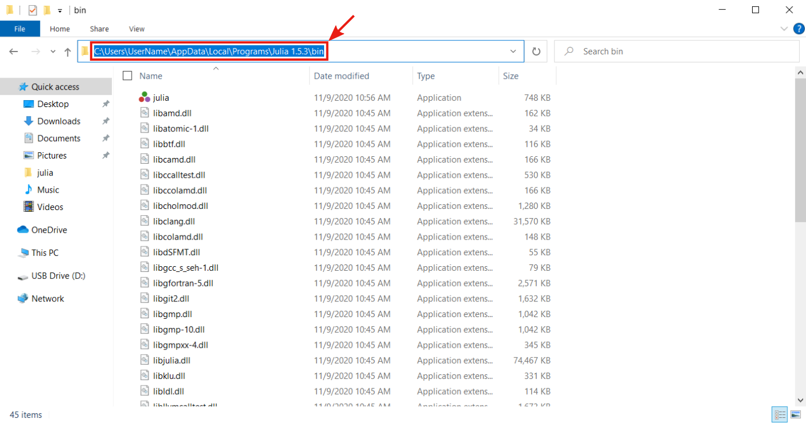
Navigate back to the Edit environment variable window, select the first empty row, press the Edit button, and paste the path to the Julia bin folder. Then press the OK button to leave the window and again to leave the Environment Variables window too.
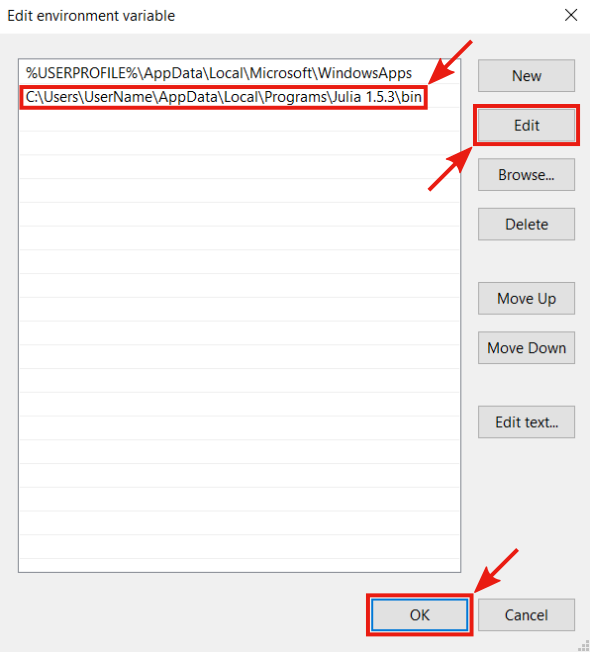
Finally, we can check that we added the path correctly. Type cmd into the search bar and open the Command Prompt.
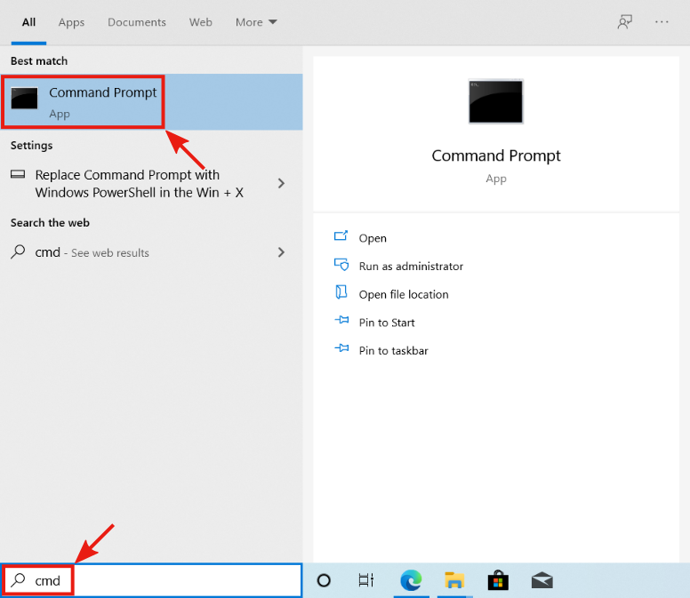
In the Command Prompt type julia and press Enter. If everything is set correctly, it will start a new Julia session (REPL).
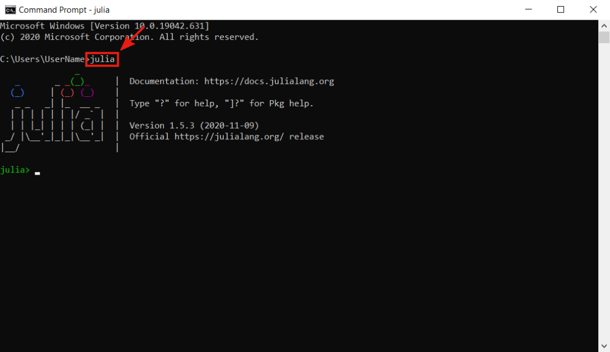